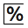

Define parameters
Fill in all parameters for the command assigned to a script step. Select the script step within the script tree structure to be processed. Activate editing of the parameter definition with the  button in the main dialog. Alternatively, double-click with the left mouse button in the table .
button in the main dialog. Alternatively, double-click with the left mouse button in the table .

Parameter definition
Parameter view with three areas (user parameters, temporary parameters, predefined parameters)
Parameter definition
The options in the input field are also processed from top to bottom. This is used for some functions, for example, in the Set layer visible/invisible function.
| Enter a short description of the purpose of the function, to be displayed in the script overview. |
| Input field Enter values. Depending on the function, a string or a number may be permissible. The colored background of a cell provides information about its function:
To enter a vector, use a semicolon as the separator, for example, A parameter of the main script can be referenced in a subscript. Even if the main script has not been executed, it is possible to view the referenced parameter by resting the mouse pointer in the subscript. |
| Drop-down list In certain functions, a drop-down list allows the user to select from a list of already existing entries, such as a machine or a material, for example. |
| Input button All table cells with a double border are input buttons. Click the button and then select an entity to automatically transfer color, layer or vector. This can be used to avoid manual entry of an RGB value, layer or vector. |
| Link string By clicking with the left mouse button on a table cell in the second table column, a reference to the information in the table row can be copied to the clipboard. This information can also be used elsewhere with this reference string. The information can only be changed at the original location. |
| Transfer parameters to parameter overview For required parameters, double-click with the left mouse button in the icon column to transfer the parameter to the parameter overview. Administer references Maintain the references in the parameter definition. To do this, click an icon and right-click to open the context menu: Clean references: Clean up existing links. Create references: Create an automatic link wherever this value is found. |
| Make parameters visible or invisible during the script run. |


Parameter view
For clarity purposes, the display of the script variable used for the parameter definition is replaced by temporary variables such as %U1%, %P2%, %T3%... These short script variables are only valid for a short time at the time of input. The numbering results from the first occurrence in the entire script. The normal script variables are always saved.
The parameter overview consists of three areas with a tabular overview.
User parameters: Display of script variables created by the user during definition of the parameters, which were transferred to the parameter overview. Marked as a short script variable with U, e.g.
%U1%. Display of parameters created globally for the session, which are marked with G, e.g.%G1%. See the command Write global parameter.Temporary parameters: Parameters that are created temporarily during the script run in order to assign values to them, e.g.
%T3%.Predefined parameters: Display of the parameters predefined and assigned values by AUTOMATION Center and the associated script variables, e.g.
%P2%.
 | Use short script variables. Switch between the modes. |
Transfer value for parameters from the parameter view to the parameter definition using a script variable. The script variable is added to the end of the existing character string. Alternatively, double-click on the desired parameter with the left mouse button to apply the script variable for the parameter selected in the parameter definition. The script variable replaces the existing character string. | |
 | Remove the parameter selected in the parameter view from the overview. |
 | Create temp. bookmark where this parameter is used. |